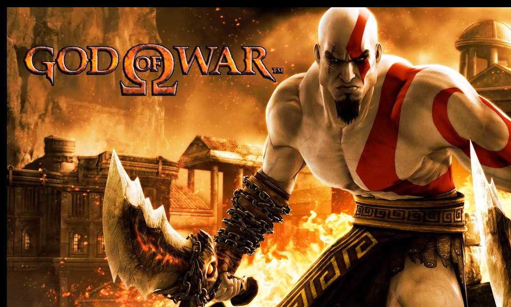
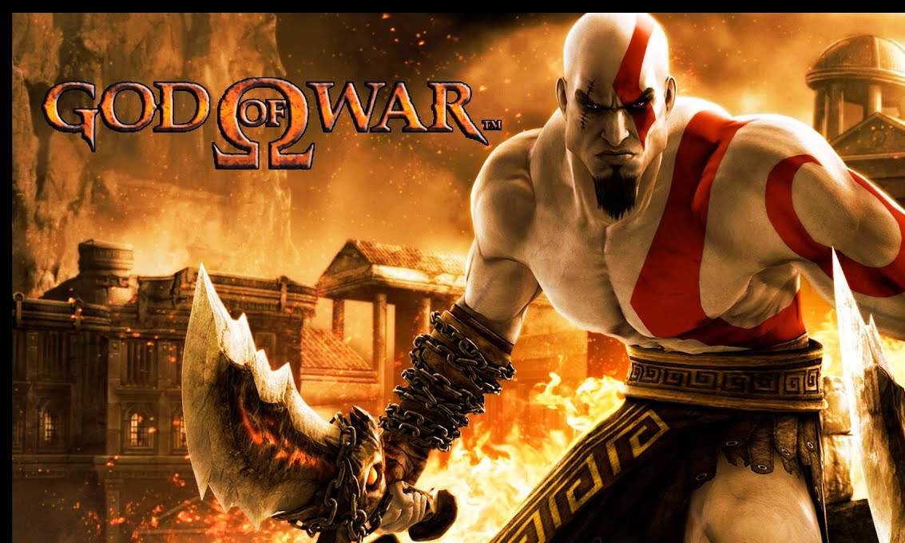

¿De que trata God Of War?
Se basa en las aventuras de un semidiós espartano, Kratos, quien se enfrenta a diversos personajes de la mitología griega y nórdica, tanto héroes (Heracles, Teseo, Perseo, etc.); especies mitológicas (gorgonas, arpías, o minotauros); dioses griegos (Ares, Poseidón, Zeus, entre otros), titanes (como Cronos) y dioses primordiales (como Gaia). Aunque el guerrero espartano acostumbra enemistad con la mayoría de los dioses, recibe ayuda de muchos de ellos en algún momento de cada entrega, en especial de Atenea.
Jugabilidad
Es un juego en tercera persona, que se basa en dos espadas atadas por cadenas que las conectan al espartano. Además, en cada edición del juego se presentan distintos poderes mágicos entregados por diversos Dioses o Titanes, En God of War III se formuló un nuevo sistema que acompañó al de los poderes mágicos, el de los objetos. No gastan magia, sino una barra especial amarilla que se recarga sola rápidamente si está en desuso. Los combos son otro factor importante: al presionar una serie de botones en un orden determinado, Kratos realizará ataques más espectaculares y dañinos contra sus enemigos. La cantidad de combos se expandió mucho desde el primer God of War hasta el Ascension.
Los juegos estan disponibles para las consolas üéÆ
- Play Station 2
- Play Station 3
- Play Station 4
- Play Station 5
- Play Station Portable
- Play Station Vita
Titulos disponibles
- God of War Año 2005
- God of War Betrayal Año 2007
- God of War II Año 2007
- God of War: Chains Of Olympus Año 2008
- God of War III Año 2010
- God of War: Ghost Of Sparta Año 2010
- God of War Ascencion Año 2013
Proximo juego de la sagaüò±
God of War Ragnarok
Fecha de estreno: 9 de noviembre 2022
God of War: Ragnarök es el próximo juego de acción y aventuras en desarrollo por Santa Monica Studio y que será publicado por Sony Interactive Entertainment. Su lanzamiento está programado para el 9 de noviembre del 2022 para PlayStation 4 y PlayStation 5.​ Será la 9.ª entrega de la saga de God of War.
Trailer
¿Porque lo recomiendo?
En lo personal, siempre me han gustado las historias que contengan mitologías en la historia. Me comenzó a llamar la atención que el videojuego se tratara de la mitología griega y comence a jugar "God of War: Chains Of Olympus" del 2008por medio de la consola PSP, desde aquel día me fascino la forma en la que un antiheroe se enfrentaba a distintos personajes iconicos de aquella cultura, su modo de combate y los retos que proponia el juego eran atractivos desde mi perspectiva, despues me compre el PS3 y decidi jugar del 1 al 3 así como el ascencion, se volvieron parte de mis juegos favoritos, los cuales me hicieron vicio por jugar tantas horas.